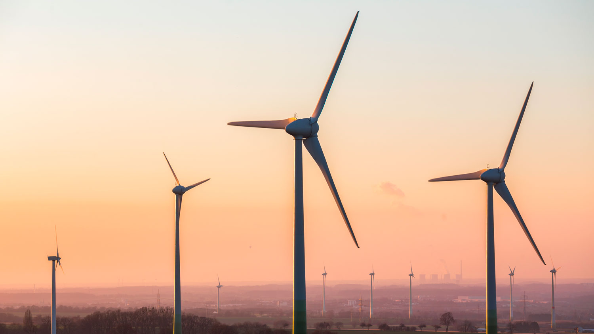

La energía eólica se ha convertido en una fuente de generación de electricidad clave para el cambio del modelo energético, más limpio y sostenible. La mejora de la tecnología permite que algunos campos eólicos produzcan energía eléctrica tan barata como lo hace el carbón o las centrales atómicas. Sin duda, estamos ante una fuente de energía con sus ventajas y sus desventajas, pero las primeras ganan por goleada.
La energía eólica es la energía que se obtiene del viento. Se trata de un tipo de energía cinética producida por el efecto de las corrientes de aire. Esta energía la podemos convertir en electricidad a través de un generador eléctrico. Es una energía renovable, limpia, que no contamina y que ayuda a reemplazar la energía producida a través de los combustibles fósiles.
El mayor productor de energía eólica del mundo es Estados Unidos, seguido de Alemania, China, India y España. En América Latina el mayor productor es Brasil. En España, la energía eólica abasteció de electricidad al equivalente a 12 millones de hogares, esto es un 18% de las necesidades del país (Fuente AEE).
La energía eólica se obtiene al convertir el movimiento de las palas de un aerogenerador en energía eléctrica. Un aerogenerador es un generador eléctrico movido por una turbina accionada por el viento, sus predecesores son los molinos de viento.
Un aerogenerador lo conforman la torre; un sistema de orientación ubicado al final de la torre, en su extremo superior; un armario de acoplamiento a la red eléctrica pegado a la base de la torre; una góndola que es el armazón que cobija los componentes mecánicos del molino y que sirve de base a las palas; un eje y mando del rotor por delante de las palas; y dentro de la góndola, un freno, un multiplicador, el generador y el sistema de regulación eléctrica.
Las palas están conectadas al rotor, a su vez conectado al eje (colocado en el polo), que envía la energía de rotación al generador eléctrico. Este generador utiliza imanes para producir voltaje eléctrico y, por tanto, energía eléctrica.
Los parques eólicos evacuan la electricidad producida desde su centro de transformación mediante una línea eléctrica hasta una subestación de distribución, a la que se le suministra la energía producida, que ésta hace llegar hasta el usuario final.
Es una fuente de energía renovable. El viento es una fuente abundante e inagotable, lo que significa que siempre se puede contar con la fuente original que produce la energía. Lo que hace que no tenga fecha de caducidad. Además, está disponible en muchos lugares del mundo.
Para producir y acumular la misma cantidad de energía eléctrica, un campo eólico necesita menos terreno que un campo de energía fotovoltaica.
Además., es reversible, lo que significa que el área ocupada por el parque puede restaurarse fácilmente para renovar el territorio preexistente.
La energía eólica es una fuente de energía más limpia después de la energía solar. Esto es así porque durante su proceso de generación no lleva implícito un proceso de combustión. Así, no produce gases tóxicos, ni residuos sólidos alguno. Para hacernos una idea. Un aerogenerador alcanza una capacidad de energía similar a la de 1.000 Kg de petróleo.
Además, las propias turbinas tienen un ciclo de vida muy largo antes de ser retiradas para su eliminación.
Los costes de las turbinas eléctricas eólicas y el mantenimiento de la turbina son relativamente bajos. El coste por kW producido es bastante bajo en las áreas muy ventosas. En algunos casos, el coste de producción es el mismo que el del carbón, e incluso la energía nuclear.
La actividad agrícola y ganadera convive armoniosamente con la actividad de un parque eólico. Esto hace que no tenga un impacto negativo en la economía local, permite que las instalaciones no interrumpan el desarrollo de su actividad tradicional al mismo tiempo que genera una nueva fuente de riqueza.
El viento es relativamente impredecible por lo que no siempre se cumplen las previsiones de producción, especialmente en unidades temporales pequeñas. Para minimizar los riesgos las inversiones en este tipo de instalaciones son siempre a largo plazo, con lo que el cálculo del retorno de éstas es más seguro. Se entiende mejor este inconveniente con un dato: los aerogeneradores sólo funcionan correctamente con ráfagas de viento entre los 10 y los 40 Km/h. A velocidades menores la energía no resulta rentable y a mayores supone un riesgo físico para la estructura.
Se trata de energía que no se puede almacenar, sino que debe ser consumida de manera inmediata cuando se produce. Eso hace que no pueda ofrecer una alternativa completa al uso de otros tipos de energía.
Los grandes parques eólicos tienen un fuerte impacto paisajístico y son visibles desde largas distancias. La altura promedio de las torres/turbinas oscila entre os 50 y los 80 metros, con palas giratorias que se elevan otros 40 metros. El impacto estético en el paisaje a veces genera malestar en la población local.
Los parques eólicos pueden tener un impacto negativo a la avifauna, especialmente entre las aves rapaces nocturnas. El impacto en la avifauna se debe a que las palas giratorias pueden moverse a una velocidad de hasta 70 Km/h. Las aves no son capaces de reconocer visualmente las cuchillas a esta velocidad, chocando con ellas fatalmente.
En Factorenergia tenemos la vocación de liderar el proceso de descarbonización de la economía. Somos protagonistas en la implantación de un nuevo modelo energético basado en energías limpias y en la eficiencia. Ambos son los factores clave en la lucha contra el cambio climático. Por eso, hemos firmado un acuerdo con el Grupo Enhol para la puesta en marcha de dos parques eólicos con una potencia instalada total de 90MW y que producirán 320GWh al año, con los que Factorenergia podría abastecer a 80.000 familias, ofreciéndoles energía 100% de origen renovable. Factorenergia se ha enfocado en liderar el mercado de las energías limpias generando nuevas alternativas en energías renovables, promoviendo el autoconsumo eléctrico y la eficiencia energética para sus clientes.

La energía eólica es la energía que se obtiene del viento o, dicho de otro modo, es el aprovechamiento de la energía cinética de las masas de aire que puede convertirse en energía mecánica y a partir de ella en electricidad u otras formas útiles de energía para las actividades humanas. Es una energía renovable.
El término «eólico» proviene del latín naeolicus, o «perteneciente o relativo a Eolo», dios de los vientos en la mitología griega.1
En la actualidad, la energía eólica se utiliza principalmente para producir electricidad, lo que se consigue mediante aerogeneradores conectados a las grandes redes de distribución de energía eléctrica, entre otras. Los parques eólicos construidos en tierra suponen una fuente de energía cada vez más barata y competitiva, esa incluso más barata en muchas regiones que otras fuentes de energía convencionales.23 Además se puede proporcionar electricidad en regiones aisladas que no tienen acceso a la red eléctrica mediante instalaciones eólicas de reducido tamaño, o también con energía solar fotovoltaica. Las compañías eléctricas distribuidoras adquieren cada vez en mayor medida el excedente de electricidad producido por pequeñas instalaciones eólicas domésticas.4 El auge de la energía eólica ha provocado también la planificación y construcción de parques eólicos marinos —a menudo conocidos como parques eólicos offshore por su nombre en inglés—, situados cerca de las costas. La energía del viento es más estable y fuerte en el mar que en tierra, y los parques eólicos marinos tienen un impacto visual menor, aunque los costos de construcción y mantenimiento son considerablemente mayores.
A finales de 2014, la capacidad mundial instalada de energía eólica ascendía a 370 GW, generando alrededor del 5 % del consumo de electricidad mundial.56 Dinamarca genera más de un 25 % de su electricidad mediante energía eólica, y más de 80 países en todo el mundo la utilizan de forma creciente para proporcionar energía eléctrica en sus redes de distribución,7 aumentando su capacidad anualmente con tasas por encima del 20 %. En España la energía eólica produjo un 20,3 % del consumo eléctrico de la península en 2014, convirtiéndose en la segunda tecnología con mayor contribución a la cobertura de la demanda, muy cerca de la energía nuclear con un 22,0 %.8
La energía eólica es un recurso abundante, renovable y limpio que ayuda a disminuir las emisiones de gases de efecto invernadero al reemplazar fuentes de energía a base de combustibles fósiles. El impacto ambiental de este tipo de energía es además, generalmente, menos problemático que el de otras fuentes de energía.
La energía del viento es bastante estable y predecible a escala anual, aunque presenta variaciones significativas a escalas de tiempo menores. Al incrementarse la proporción de energía eólica producida en una determinada región o país, se hace imprescindible establecer una serie de mejoras en la red eléctrica local.910 Diversas técnicas de control energético, como una mayor capacidad de almacenamiento de energía, una distribución geográfica amplia de los aerogeneradores, la disponibilidad de fuentes de energía de respaldo, la posibilidad de exportar o importar energía a regiones vecinas o la reducción de la demanda cuando la producción eólica es menor, pueden ayudar a mitigar en gran medida estos problemas.11 Además, son de extrema importancia las previsiones de producción eólica que permiten a los gestores de la red eléctrica estar preparados y anticiparse frente a las previsibles variaciones en la producción eólica que puedan tener lugar a corto plazo.1213
La energía del viento está relacionada con el movimiento de las masas de aire que se desplazan desde zonas de alta presión atmosférica hacia zonas adyacentes de menor presión, con velocidades proporcionales al gradiente de presión y así poder generar energía.
Los vientos se generan a causa del calentamiento no uniforme de la superficie terrestre debido a la radiación solar; entre el 1 y el 2 % de la energía proveniente del Sol se convierte en viento. Durante el día, los continentes transfieren una mayor cantidad de energía solar al aire que las masas de agua, haciendo que este se caliente y se expanda, por lo que se vuelve menos denso y se eleva. El aire más frío y pesado que proviene de los mares, océanos y grandes lagos se pone en movimiento para ocupar el lugar dejado por el aire caliente.
Para poder aprovechar la energía eólica es importante conocer las variaciones diurnas, nocturnas y estacionales de los vientos, la variación de la velocidad del viento con la altura sobre el suelo, la entidad de las ráfagas en espacios de tiempo breves, y los valores máximos ocurridos en series históricas de datos con una duración mínima de 20 años. Para poder utilizar la energía del viento, es necesario que este alcance una velocidad mínima que depende del Aerogenerador que se vaya a utilizar pero que suele empezar entre los 3 m/s (10 km/h) y los 4 m/s (14,4 km/h), velocidad llamada "cut-in speed", y que no supere los 25 m/s (90 km/h), velocidad llamada cut-out speed.
La energía del viento se aprovecha mediante el uso de máquinas eólicas o aeromotores capaces de transformar la energía eólica en energía mecánica de rotación utilizable, ya sea para accionar directamente las máquinas operatrices o para la producción de energía eléctrica. En este último caso, el más ampliamente utilizado en la actualidad, el sistema de conversión —que comprende un generador eléctrico con sus sistemas de control y de conexión a la red— es conocido como aerogenerador. En estos la energía eólica mueve una hélice y mediante un sistema mecánico se hace girar el rotor de un generador, normalmente un alternador, que produce energía eléctrica. Para que su instalación resulte rentable, suelen agruparse en concentraciones denominadas parques eólicos.
Una turbina eólica es una máquina que transforma la energía del viento en energía mecánica mediante unas aspas oblicuas unidas a un eje común. El eje giratorio puede conectarse a varios tipos de maquinaria, sea para moler grano (molinos), bombear agua o generar electricidad. Cuando se usa para producir electricidad se le denomina generador de turbina de viento. Las máquinas movidas por el viento tienen un origen remoto, siendo las más antiguas las que funcionaban como molinos. La energía eólica es la energía que se obtiene del viento o, dicho de otro modo, es el aprovechamiento de la energía cinética de las masas de aire que puede convertirse en energía mecánica y a partir de ella en electricidad u otras formas útiles de Energía en cotidianas actividades humanas.
La energía eólica no es algo nuevo, es una de las energías más antiguas junto a la energía térmica. El viento como fuerza motriz se ha utilizado desde la antigüedad. Así, ha movido a barcos mediante el uso de velas o ha hecho funcionar la maquinaria de los molinos al mover sus aspas. Sin embargo, tras una época en la que se fue abandonando, a partir de los años ochenta del siglo xx este tipo de energía limpia experimentó un renacimiento.
La energía eólica crece de forma imparable ya en el siglo xxi, en algunos países más que en otros, pero sin duda alguna en España existe un gran crecimiento, siendo uno de los primeros países, por debajo de Alemania a nivel europeo o de Estados Unidos a escala mundial. El auge del aumento de parques eólicos se debe a las condiciones favorables de viento, sobre todo en Andalucía que ocupa un puesto principal, entre los que se puede destacar el golfo de Cádiz, ya que el recurso de viento es excepcional.
La referencia más antigua que se tiene es un molino de viento que fue usado para hacer funcionar un órgano en el siglo i.14 Los primeros molinos de uso práctico fueron construidos en Sistán, Afganistán, en el siglo vii. Estos eran molinos de eje vertical con hojas rectangulares.15 Se usaron artefactos para moler trigo o extraer agua hechos con 6 a 8 aspas de molino cubiertas con telas.
Los primeros molinos aparecieron en Europa en el siglo xii en Francia e Inglaterra y fueron extendiéndose por el continente. Eran unas estructuras de madera, conocidas como torres de molino, que se hacían girar a mano alrededor de un poste central para extender sus aspas al viento. El molino de torre se desarrolló en Francia a lo largo del siglo xiv. Consistía en una torre de piedra coronada por una estructura rotativa de madera que soportaba el eje del molino y la maquinaria superior del mismo.
Estos primeros ejemplares tenían una serie de características comunes. De la parte superior del molino sobresalía un eje horizontal. De este eje partían de cuatro a ocho aspas, con una longitud entre 3 y 9 metros. Las vigas de madera se cubrían con telas o planchas de madera. La energía generada por el giro del eje se transmitía, mediante un sistema de engranajes, a la maquinaria del molino emplazada en la base de la estructura.
Los molinos de eje horizontal fueron usados extensamente en Europa Occidental para moler trigo desde la década de 1180 en adelante. Basta recordar los famosos molinos de viento en las andanzas de Don Quijote. Todavía existen máquinas de este tipo, por ejemplo, en Países Bajos para sacar agua.16
En Estados Unidos, el desarrollo de bombas eólicas, reconocibles por sus múltiples aspas metálicas, fue el factor principal que permitió la agricultura y la ganadería en vastas áreas de Norteamérica, de otra manera imposible sin acceso fácil al agua. Estas bombas contribuyeron a la expansión del ferrocarril alrededor del mundo, cubriendo las necesidades de agua de las locomotoras a vapor.17
Las turbinas eólicas modernas fueron desarrolladas a comienzos de la década de 1980, si bien continúan evolucionando los diseños.
La industria de la energía eólica en tiempos modernos comenzó en 1979 con la producción en serie de turbinas de viento por los fabricantes Kuriant, Vestas, Nordtank, Nily Baltazar y Bonus. Aquellas turbinas eran pequeñas para los estándares actuales, con capacidades de 20 a 30 kW cada una. Desde entonces, la talla de las turbinas ha crecido enormemente, y la producción se ha expandido a muchos sitios.
La energía eólica alcanzó la paridad de red (el punto en el que el costo de esta energía es igual o inferior al de otras fuentes de energía tradicionales) en algunas áreas de Europa y de Estados Unidos a mediados de la década de 2000. La caída de los costos continúa impulsando a la baja el costo normalizado de esta fuente de energía renovable: se estima que alcanzó la paridad de red de forma general en todo el continente europeo en torno al año 2010, y que alcanzará el mismo punto en todo Estados Unidos en 2016, debido a una reducción adicional de sus costos del 12 %.2
La instalación de energía eólica requiere de una considerable inversión inicial, pero posteriormente no presenta gastos de combustible.19 El precio de la energía eólica es por ello mucho más estable que los precios de otras fuentes de energía fósil, mucho más volátiles.20 El costo marginal de la energía eólica, una vez que la planta ha sido construida y está en marcha, es generalmente inferior a 1 céntimo de dólar por kWh.21 Incluso, este costo se ha visto reducido con la mejora tecnológica de las turbinas más recientes. Existen en el mercado palas para aerogeneradores cada vez más largas y ligeras, a la vez que se realizan constantemente mejoras en el funcionamiento de la maquinaria de los propios aerogeneradores, incrementando la eficiencia de los mismos. Igualmente, se han reducido los costos de inversión inicial y de mantenimiento de los parques eólicos.22
En 2004, el costo de la energía eólica se había reducido a una quinta parte del que tenía en los años 1980, y los expertos consideran que la tendencia a la baja continuará en el futuro próximo, con la introducción en el mercado de nuevos aerogeneradores "multi-megavatio" cada vez más grandes y producidos en masa, capaces de producir hasta 8 megavatios de potencia por cada unidad.23 En 2012, los costos de capital de la energía eólica eran sustancialmente inferiores a los de 2008-2010, aunque todavía estaban por encima de los niveles de 2002, cuando alcanzaron un mínimo histórico.24 La bajada del resto de costos ha contribuido a alcanzar precios cada vez más competitivos. Un informe de 2011 de la Asociación Americana de la Energía Eólica (American Wind Energy Association) afirmaba:
Los costos de la energía eólica han caído durante los dos últimos años, situándose recientemente en el orden de 5-6 céntimos por kWh... unos dos céntimos más barato que la electricidad obtenida en plantas de carbón. (...) 5600 MW de nueva capacidad instalada están actualmente en construcción e los Estados Unidos, más del doble que lo instalado hasta 2010. El 35 % de toda la nueva capacidad de generación construida en Estados Unidos desde 2005 proviene de la energía eólica, más que la suma de nueva capacidad proveniente de plantas de gas y carbón, ya que los proveedores de energía son atraídos cada vez más a la energía eólica como un recurso fiable frente a los movimientos impredecibles en los precios de otras fuentes de energía.25
Otro informe de la Asociación Británica de la Energía Eólica estima un costo de generación medio para la eólica terrestre de 5-6 céntimos de dólar por kWh (2005).26 El costo por unidad de energía producida se estimaba en 2006 como comparable al costo de la energía producida en nuevas plantas de generación en Estados Unidos procedente del carbón y gas natural: el costo de la eólica se cifraba en $55,80 por MWh, el del carbón en $53,10/MWh y el del gas natural en $52,50.27 Otro informe gubernamental obtuvo resultados similares en comparación con el gas natural, en 2011 en Reino Unido.28 En agosto de 2011 licitaciones en Brasil y Uruguay para compra a 20 años presentaron costos inferiores a los $65 por MWh.
En febrero de 2013 Bloomberg New Energy Finance informó de que el costo de la generación de energía procedente de nuevos parques eólicos en Australia es menor que el procedente de nuevas plantas de gas o carbón. Al incluir en los cálculos el esquema de precios actual para los combustibles fósiles, sus estimaciones indicaban unos costos (en dólares australianos) de $80/MWh para nuevos parques eólicos, $143/MWh para nuevas plantas de carbón y $116/MWh para nuevas plantas de gas. Este modelo muestra además que «incluso sin una tasa sobre las emisiones de carbono (la manera más eficiente de reducir emisiones a gran escala) la energía eólica es un 14 % más barata que las nuevas plantas de carbón, y un 18 % más que las nuevas plantas de gas.»29
La industria eólica en Estados Unidos es actualmente capaz de producir mayor potencia a un costo menor gracias al uso de aerogeneradores cada vez más altos y con palas de mayor longitud, capturando de esta manera vientos mayores a alturas más elevadas. Esto ha abierto nuevas oportunidades, y en estados como Indiana, Míchigan y Ohio, el costo de la eólica procedente de aerogeneradores de entre 90 y 120 metros de altura puede competir con fuentes de energía convencionales como el carbón. Los precios han caído hasta incluso 4 céntimos por kWh en algunos casos, y las compañías distribuidoras están incrementando la cantidad de energía eólica en su modelo energético, al darse cuenta progresivamente de su competitividad.30
El costo de la unidad de energía producida en instalaciones eólicas se deduce de un cálculo bastante complejo. Para su evaluación se deben tener en cuenta diversos factores, entre los cuales cabe destacar:
Existe una gran cantidad de aerogeneradores operando, con una capacidad total de 369 597 MW a finales de 2014, de los que Europa cuenta con el 36,3 %.31 China y los Estados Unidos representan juntos casi el 50 % de la capacidad eólica global, mientras que los primeros cinco países (China, EE. UU., Alemania, España e India) representaron el 71,7 % de la capacidad eólica mundial en 2014.31
Alemania, España, Estados Unidos, India y Dinamarca han realizado las mayores inversiones en generación de energía eólica. Dinamarca es, en términos relativos, la más destacada en cuanto a fabricación y utilización de turbinas eólicas, con el compromiso realizado en los años 1970 de llegar a obtener la mitad de la producción de energía del país mediante el viento. En 2014 generó el 39,1 % de su electricidad mediante aerogeneradores, mayor porcentaje que cualquier otro país, y el año anterior la energía eólica se consolidó como la fuente de energía más barata del país.32
La siguiente tabla muestra la capacidad total de energía eólica instalada al final de cada año (en megavatios) en todo el mundo, detallado por países. Datos publicados por el Global Wind Energy Council (GWEC).33
gracias por ver mi grandiosa pagina hecha por gale antonio